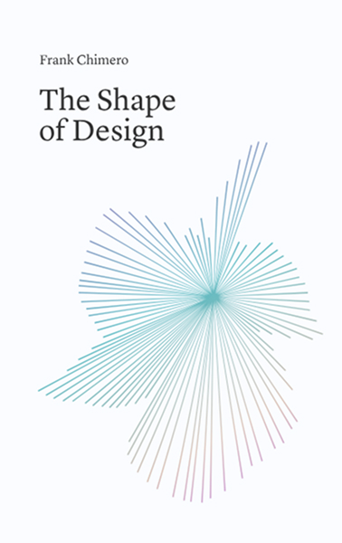
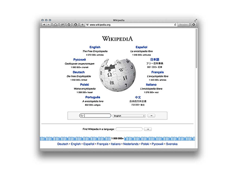

La filosofia del web design
Le nuove qualifiche lavorative:
UX designer, UI designer, interaction designer, product designer, visual designer
Gli esempi:
- 1.Il primo sito è stato pubblicato da Tim Berners-Lee(padre del we design) il 6 agosto 1991.
- 2.A List Apart, rivista fondata da Jeffrey Zeldman.
- 3.UX Collective è un blog collettivo fondato da Fabricio Teixeira e Caio Braga.
- 4.Il gruppo di Ux Collective ha lanciato un nuovo progetto, DOC, un articolo molto condiviso con l’intento di «documentare il significato nel mondo del design».
The Vanishing designer (DOC)


Frankchimero.com

